Gabriel
e Geus
e Geus
Gli Inizi · Vol. I

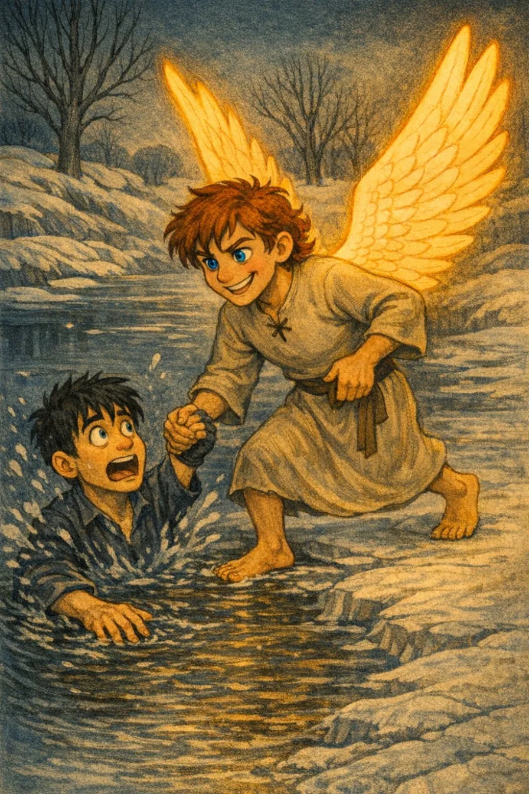
La stanza era particolarmente ordinata per un ragazzo della sua età. Non che fosse merito suo, ma ordine e pulito colpivano qualunque persona, essere o quasi angelo che avesse osservato i dintorni del suo letto.
Gabriel aveva solo 12 anni ma il suo comportamento aveva già destato le attenzioni dei Piani Superiori...
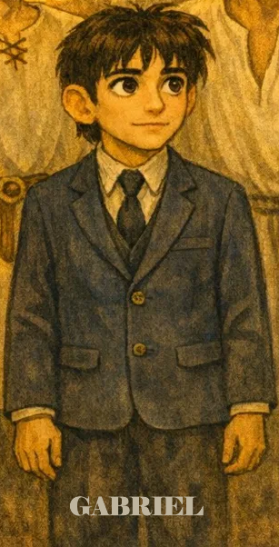
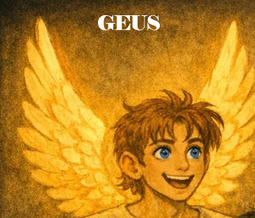
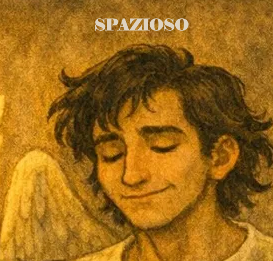
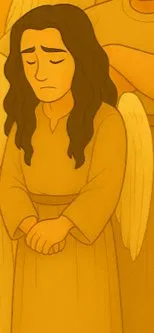
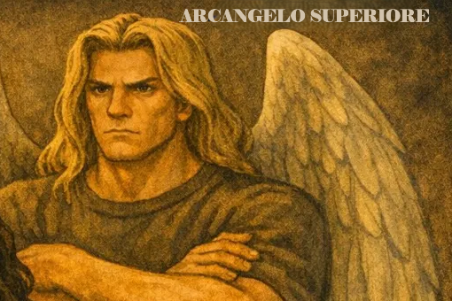
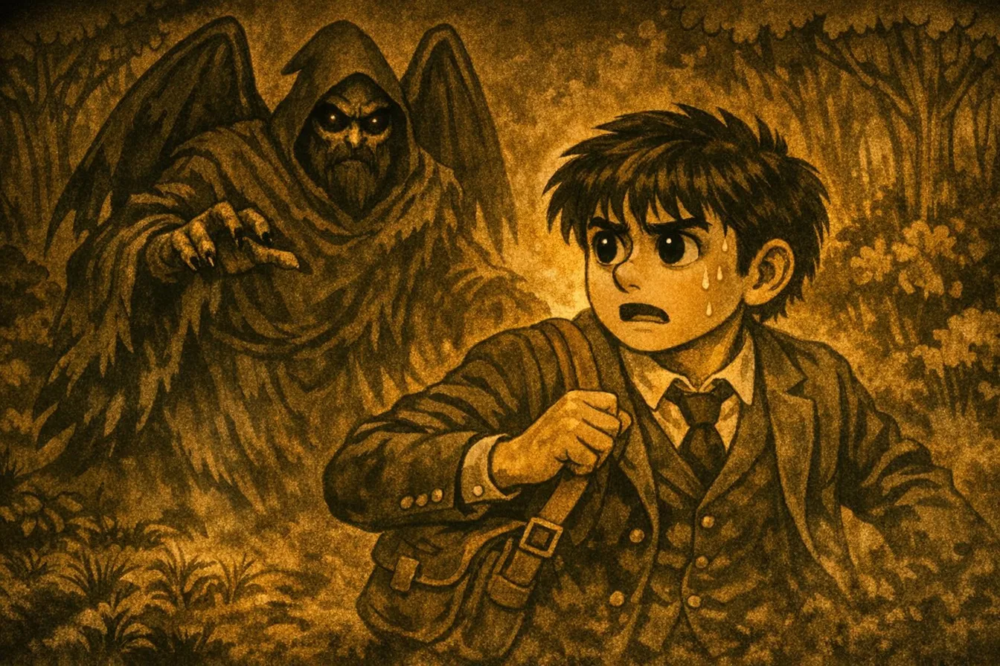
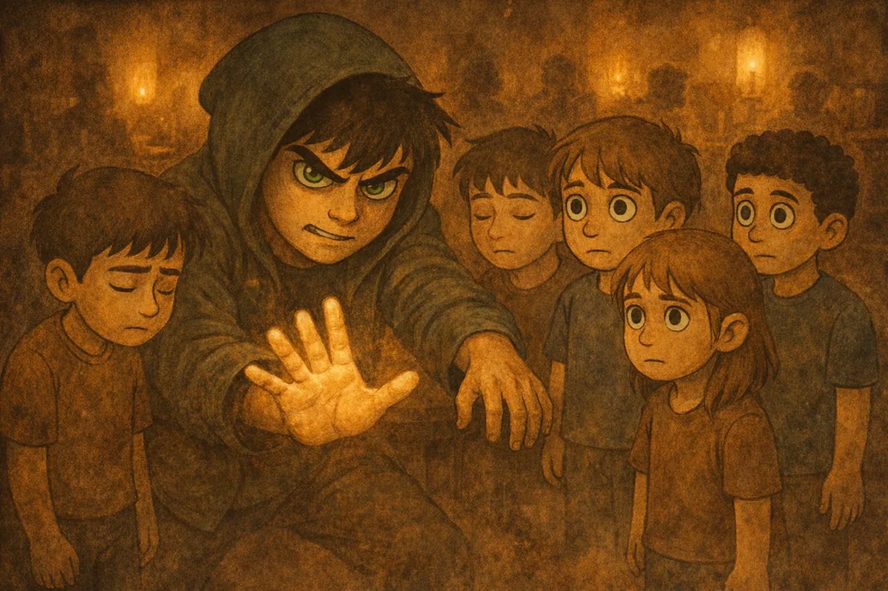
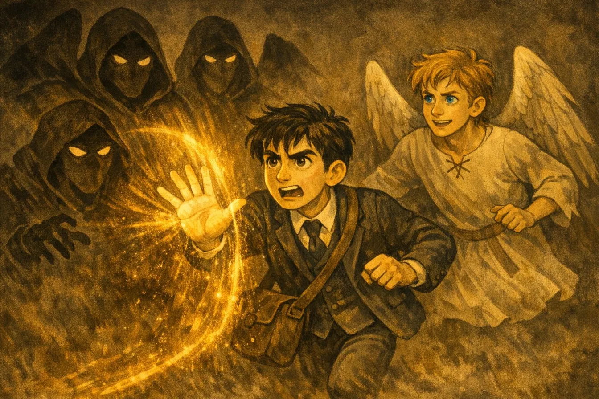
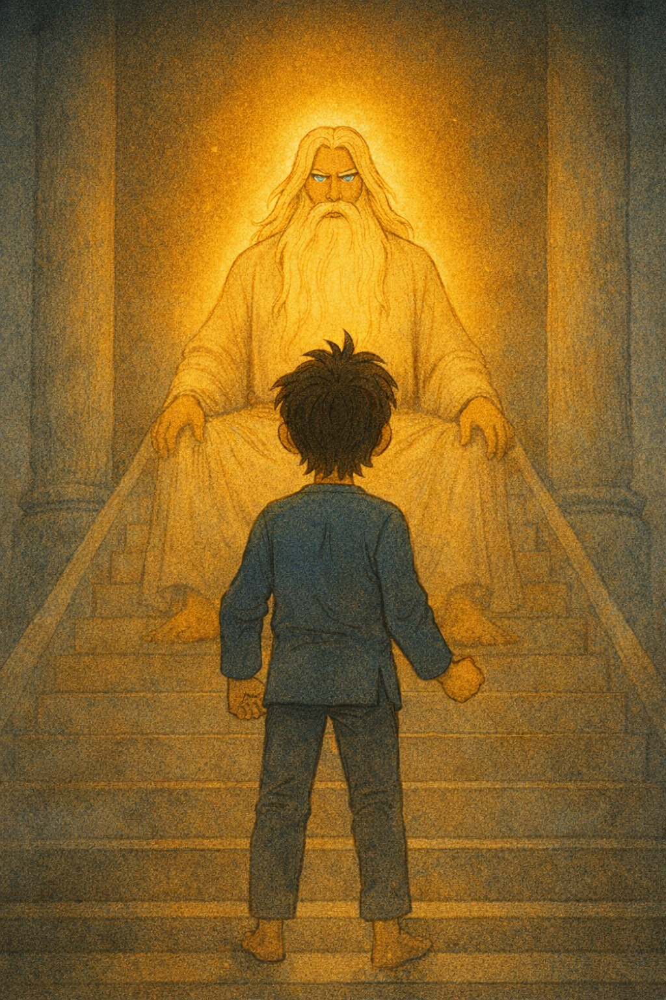
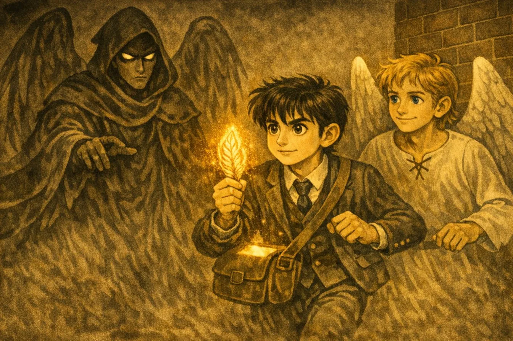
Questa app è il companion ufficiale del romanzo Gabriel e Geus — Gli Inizi. Contiene le schede dei personaggi, il sistema di statistiche e i contenuti esclusivi della saga.
Gaetano Bertozzi Avanzini
© 2025 Gaetano Bertozzi Avanzini. Tutti i diritti riservati.
Nessuna parte di questa app, inclusi testi, personaggi, illustrazioni e contenuti, può essere riprodotta, distribuita o trasmessa in qualsiasi forma senza il previo consenso scritto dell'autore.
© 2025 Gaetano Bertozzi Avanzini
Gabriel e Geus — App Companion Ufficiale
I personaggi, la storia, il sistema di gioco e tutti i contenuti originali sono proprietà esclusiva dell'autore. Qualsiasi utilizzo non autorizzato è vietato.